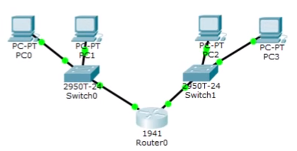
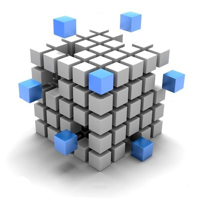
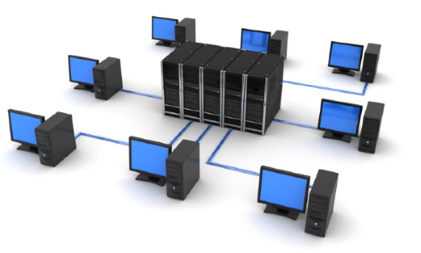

Личная страница
Студент: Румянцев Герман
Группа: ИДМ-17-05
Проектная команда: DCP Team
Дисциплина: Интернет-технологии
Отчёты по лабораторным работам
Лабораторная работа №1
Тема: "Экосистема разработки программ с открытым кодом"
Лабораторная работа №2
Тема: "Разработка простого веб-приложения"
Лабораторная работа №3
Тема: "Настройка локальной сети передачи данных"
Цель лабораторной работы: настройка коммутаторов и маршрутизаторов для правильной работы внутри сети.
Порядок выполнения:
- Расчёт IP-адресов;
- Настройка адресации между двумя компьютерами;
- Проверка работособности сети;
- Добавление коммутатора, маршрутизатора и двух компьютеров в состав сети;
- Настройка статической маршрутизации. Основные команды для использования:
- show ip route – таблица маршрутизации;
- show ip protocols – информациz об используемых протоколах маршрутизации;
- ip route [сеть назначения] [маска] [маршрут] – статический маршрут до указанной сети назначения;

- Установка баннера на сетевое оборудование. Команда:
- Banner motd [баннер] – определяет баннерное сообщение;
- Проверка работособности сети.

Лабораторная работа №4
Тема: "Подготовка к экзамену"
Виртуализация — это процесс создания программного (или виртуального) представления чего-либо в противоположность его физической реализации.
Виртуализацию можно применять для приложений, серверов, систем хранения и сетей. Это единственный и самый эффективный способ сокращения расходов на ИТ-инфраструктуру
с возможностью повышения эффективности и адаптивности для компаний любых размеров.

Типы виртуализации:
- Виртуализация серверов
- Виртуализация сети
- Виртуализация настольных компьютеров
- Программное хранилище
Преимущества виртуализации:
- Сокращение капитальных и эксплуатационных расходов
- Минимизация или исключение простоев
- Повышение скорости реагирования, адаптивности, эффективности и производительности ИТ-среды
- Ускоренная инициализация приложений и ресурсов
- Обеспечение непрерывности бизнеса и аварийного восстановления
- Упрощенное управление ЦОД
- Решение на базе программного ЦОД

Виртуальная машина
Виртуальная компьютерная система, также называемая виртуальной машиной (ВМ), — это строго изолированный контейнер ПО, содержащий операционную систему и приложение.
Каждая автономная виртуальная машина полностью независима. Наличие нескольких ВМ на одном компьютере обеспечивает работу нескольких операционных систем и приложений на одном физическом сервере.
Тонкий уровень ПО, называемый гипервизором, отделяет виртуальные машины от сервера и по мере необходимости динамически выделяет вычислительные ресурсы каждой виртуальной машине.
Основные свойства виртуальных машин:
- Разбиение
- Выполнение нескольких операционных систем на одном физическом компьютере
- Разделение системных ресурсов между виртуальными машинами
- Изоляция
- Изоляция сбоев и нарушений системы безопасности на аппаратном уровне
- Сохранение уровня производительности с помощью расширенных средств управления ресурсами
- Инкапсуляция
- Полное сохранение состояния виртуальной машины в виде файлов
- Перемещение и копирование виртуальных машин аналогичны операциям с файлами
- Независимость от оборудования
- Инициализация и перенос любой виртуальной машины на любой физический сервер
Вопрос
Выберите верные утверждения:
- Сохранение уровня производительности с помощью расширенных средств управления ресурсами обеспечивается процессом инкапсуляции
- Независимость от оборудования является одним из основных свойств виртуальной машины
- Каждая виртуальная машина является зависимой.
- Инкапсуляция отвечает за полное сохранение состояния виртуальной машины в виде файлов
- Виртуализацию нельзя применить для систем хранения и сетей
- Виртуализация не предусматривает минимизацию или исключение простоев
- Тонкий уровень ПО называется гипервизором
- Виртуализацию можно осуществить в виде решения на базе программного ЦОД
*Верные ответы веделены с помощью жирного шрифта